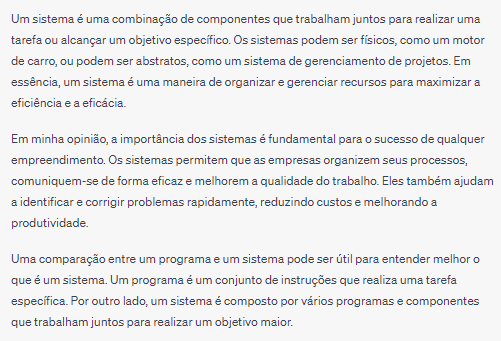

Marcos Vinícius Nunes Reis - AI-APW-01
Quando estamos falando de modelagem de sistemas estamos falando de um modelo que preza organizar um conjunto de recursos de acordo com todas as necessidades, ou seja, um sistema. Voltando à lógica de programação, podemos pensar da seguinte forma: Um algoritmo são os passos e instruções para realizar alguma coisa, enquanto um sistema seria o conjunto do que é necessário para que seja alcançado o que se espera ao final do projeto e nessa hora a modelagem entra em cena para que todas as necessidades fiquem catalogadas e facilite no sucesso.
Um programa iria seguir um algoritmo, ou seja, o conjunto de instruções, para realizar o que é necessário. O sistema é modelado a partir das necessidades apresentadas para obter todas as funcionalidades. De forma simples, o programa vê o que tem que fazer enquanto o sistema vê o que se precisa fazer e todos eles se complementam entre si. Voltando à atividade de situação de aprendizagem, Fernando me apresentou todas as suas necessidades então tive que ter em mente todas as coisas que haveriam de ter no projeto, após isso tenho que pensar também no algoritmo, como seriam as linhas de códigos para que todas as funcionalidades estejam presentes e por fim, finalmente criar o programa, para que levando em conta todas os pedidos, possa seguir o algoritmo e se adequar às necessidades. Dessa forma, há a conclusão do projeto utilizando tanto de algoritmo, programa e uma modelagem de sistema.
Por isso creio que os sistemas são tão importantes, pois sem eles, talvez esse meu programa, poderia ter faltado componentes solicitados, ou não ter sido realizado a apresentação ou a planilha, outros recursos apresentados no sistema e não ter se adequado ao pedido de Fernando. Os sistemas e sua modelagem, nos ajuda a visualizar melhor todos os stakeholders presentes e seus interesses, possibilitando uma melhor compreensão e concordância com todas as demandas.
